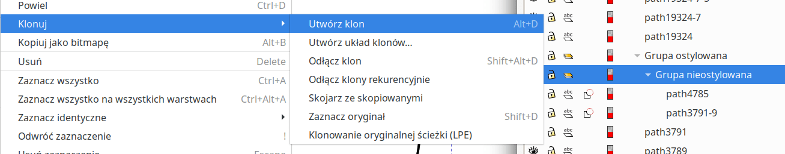

Klony to zaawansowana technika, dzięki której można zaoszczędzić dużo pracy przy rysowaniu planów zawierających "widoki przesunięte" (np. przecinających się korytarzy). Poniższy opis dotyczy Inkscape w wersji 1.1. Technika "klonów" jak najbardziej działa również w Inkscape 1.3, jednak interfejs Inkscape zdążył nieco ewoluować i trzeba trochę sprytu, żeby zorientować się, gdzie teraz szukać omawianych tam funkcji. Najważniejsza wskazówka: w Inkscape 1.3 nie ma już okna Obiekt / obiekty - wszystkie dostępne w nim funkcje zostały przeniesione do okna Warstwy, które teraz nazywa się Warstwy i obiekty!
Zaprezentowany wyżej sposób tworzenia obrysu korytarza oraz wypełnienia jako jeden obiekt z użyciem przycinania ma dwie ważne wady. Po pierwsze, trudno jest ustawić przezroczystość samego tylko wypełnienia (co potrzebujemy do pokazywania przecinających się korytarzy) bez jednoczesnej zmiany przezroczystości konturu. Teoretycznie możemy ustawić przezroczystość na kolorze wypełnienia (zamiast na całym obiekcie lub na warstwie), ale w praktyce będziemy mieli kłopoty ze zgraniem ze sobą poszczególnych fragmentów - nie możemy wtedy nakładać ich jednego na drugi bez niepożądanych efektów nakładania się na siebie przezroczystości.
Drugim problemem jest kolejność warstw. Chciałoby się, aby wypełnienie było na samym dole, a kontur jaskini na samej górze. Pomiędzy tym powinny znajdować się szczegóły stropu i spągu. Tymczasem mając zarówno kontur, jak i wypełnienie jako jeden obiekt, nie można go umieścić jednocześnie na górze i na dole całej hierarchii warstw lub obiektów. W efekcie, jeśli na przykład chcemy narysować jeziorko dolegające do obrysu korytarza, musimy się bardzo starać.
Rozwiązanie tego problemu przy pomocy klonów nie jest może wybitnie eleganckie ... ale pokazuje kilka kolejnych, użytecznych funkcji Inkscape. Demonstrację zaczynamy od narysowania fragmentu jaskini techniką z przycinaniem (omówioną wyżej). Rysujemy go w warstwie Obrys. Załóżmy sobie też pustą warstwę Wypełnienie i umieśćmy ją poniżej warstwy Obrys.
W istocie ten fragment składa się z dwóch mniejszych fragmentów, a każdy z nich jest przycięty.
Teraz z tych dwóch fragmentów tworzymy grupę. A następnie z tej grupy tworzymy kolejna grupę. Przy pomocy dialogu Obiekt / Obiekty upewniamy się, że poszło dobrze. Powinniśmy mieć w drzewku grupę, pod nią kolejną grupę, a dopiero pod nią dwa kształty.
Dialog Obiekt / Obiekty jest bardzo ciekawy sam w sobie. Możemy przy jego pomocy na przykład zmienić nazwy nowo utworzonych grup - zewnętrzna grupa niech nazywa się Ostylowana, a wewnętrzna - Nieostylowana.
Teraz wchodzimy do grupy wewnętrznej (Nieostylowanej), klikając w dialogu Obiekt / Obiekty w którykolwiek z kształtów w tej grupie. Klikamy następie Ctrl+A, dzięki czemu zaznaczamy wszystkie kształty w grupie. Dalej w lewym dolnym rogu, w miejscu gdzie prezentowany jest kolor wypełnienia, klikamy prawym klawiszem. Z menu wybieramy Nie określono wypełnienia. Dla pewności wybieramy z listy obiektów również samą grupę Nieostylowaną i również ustawiamy jej wypełnienie typu Nie określono wypełnienia.
Teraz klikamy w dialogu Obiekt / Obiekty grupę "ostylowaną". Mając zaznaczoną tę grupę, ustawiamy brak wypełnienia (klikając X z palety kolorów).
I teraz nastąpi czarna magia. Zaznaczamy Grupę nieostylowaną w dialogu Obiekt / Obiekty, a następnie z menu wybieramy Edycja / Klony / Utwórz klon. Na skutek tego ruchu na liście obiektów pojawia się nowa pozycja o nazwie rodzaju use24215. Możemy zmienić jej nazwę - nazwijmy ją na przykład Klon obrysu.
Teraz mając zaznaczony Klon obrysu wybieramy kolor wypełnienia (np. szary).
Wydaje się, że wróciliśmy do punktu wyjścia. A jednak, jak się zaraz okaże, sytuacja jest zgoła odmienna. Teraz przenosimy obiekt Klon obrysu do warstwy Wypełnienie. Możemy to zrobić na przykład zaznaczając ten obiekt na liście obiektów, a następnie klikając prawym klawiszem - ale uwaga - na obszarze rysowania. W menu mamy wtedy do dyspozycji opcję Przenieś na warstwę. Na koniec blokujemy warstwę Wypełnienie.
Co uzyskaliśmy?
Przy pomocy okna Obiekt / Obiekty można zamienić warstwę w zwykłą grupę (i na odwrót).
Klonując warstwy możemy utworzyć widok przesunięty, który automatycznie będzie uaktualniał się po modyfikacji widoku głównego. Postępujemy następująco:
W skrajnym przypadku technikę te można zastosować do układania na stronie całego planu w ogóle. Wówczas zasadniczy rysunek planu prowadzimy zupełnie poza obszarem strony, a główny widok planu w obszarze strony jest jednym z utworzonych w powyższy sposób "widoków przesuniętych"